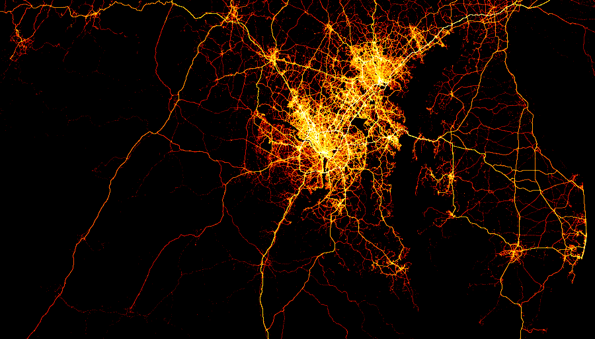

Big Data GPS Trajectory Analytics for Travel Activity Modeling
Kathleen Stewart, Junchuan Fan, Cheng Fu
Center for Geospatial Information Science, University of Maryland
- Introduction and Motivation
- Data
- GPS trajectory data from INRIX and HERE road network data
- Challenges in dealing with big irregularly-sampled GPS waypoints
- Understanding Travel Activity Behavior from big GPS trajectory data
- By space and by time
- By types of driving trajectory
- Big GPS trajectory reconstruction using Apache Spark
- VMT Estimation Result
- What’s Next?

- Most states do not randomly select traffic count sampling locations, which can create biases when limited traffic count data are extrapolated to estimate statewide VMT rates.
- For example, traffic count data collection may be selected based on where road improvement projects, land development projects, and traffic problems are located.
- Or a state may only undertake traffic counts on the “most important” roads for traffic count monitoring.
- For local roads, roads may not be sampled if they have on average traffic less than 50 vehicles per day.
Big Geospatial Data
GPS Trajectories Data

INRIX trajectory data
Collected using GPS trackers (embedded GPS)and mobile devices (using an app).
GPS waypoionts from different trips can have different sampling intervals .
Four months of data from 2015
February (3,565,361 trips, 398,652,043 waypoints)
June (4,835,882 trips, 152,604,037 waypoints)
July (4,868,583 trips, 100,246,683 waypoints)
October (6,420,576 trips, 725,217,440 waypoints)
HERE Road Network
For this research we are using the HERE road network
maintained by HERE.
A turn-by-turn navigation road network .
Lanes in each direction are represented as a single line.
The HERE network for Maryland is comprised of 445,151 road segments.
Dealing big GPS trajectory data that are irregularly-sampled...
Understanding Travel Activity Behavior from big GPS trajectory data
Geovisual analytics of big GPS trajectory data
*July 2015 dataset has 4.8 million vehicle trajectories with over 100 million GPS waypoints .
Developed parallel algorithm to visualize billions of GPS waypoints
Different types of vehicle trajectories

- INRIX data categorizes vehicle GPS trajectories into four types based on driving profile:
- Consumer/passenger cars
- Taxi/shuttle
- Local delivery fleets
- For Hire/Private Trucking Fleets

Passenger Vehicle Trajectories

Truck Fleet Trajectories
Weekday morning commute
Origin of Vehicle Trajectories
Destination of Vehicle Trajectories
Weekday morning commute inside beltway
Origin of Vehicle Trajectories
Destination of Vehicle Trajectories
Big GPS trajectory reconstruction using Apache Spark

INRIX waypoints

Match HERE segments with gaps
Reconstructed trajectories
Trajectory reconstruction algorithm
Snap way-points of an INRIX trip to HERE road segments
Fill segment gaps by heuristic algorithms